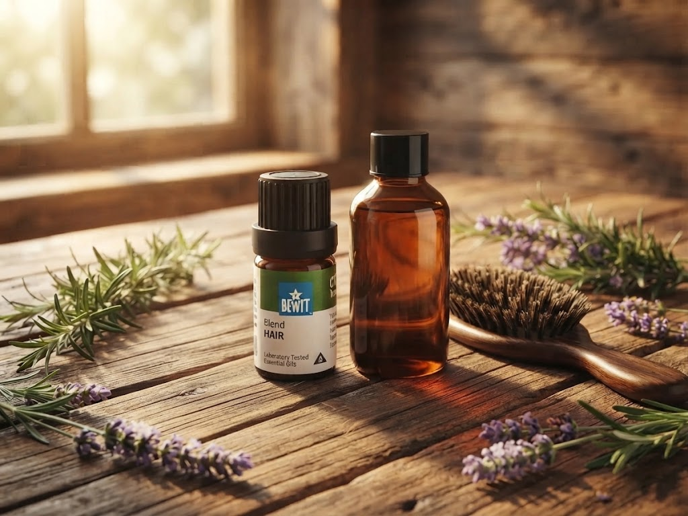

🌿 Lekce 15
esence a recepty pro zdravé, lesklé vlasy
Ukážu vám, jaké esenciální a nosné oleje vybrat podle typu vlasů, a sedm receptů, které si snadno uděláte doma.

Na podporu růstu, krásy, pevnosti a lesku vlasů vznikla speciální směs BEWIT HAIR. Bewit vyrábí i vlasové sérum HAIR, které zpevňuje, zaceluje roztřepené konečky, dodává lesk, podporuje růst vlasů a pomáhá proti přílišnému vypadávání.
Šamponový základ obohacený o směs BEWIT HAIR — hotovo za pár minut.
Kastilské mýdlo obohacené o nosný i esenciální olej podle výběru.
Krémový kondicionér z mixéru, ideální na konečky vlasů.
Jablečný ocet a esenciální oleje na oplach po umytí.
Nosný olej a esenciální voda ve spreji — usnadní ranní rozčesávání.
Další lekce: Kosmetika do koupele — pokračovat →